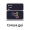

{kind=link}

{kind=link}
Warning
You are reading the legacy documentation for Corese-GUI 4.x (corese-gui-swing). New releases (5.x+) are now published in corese-gui. Use the version selector above to switch between legacy and new documentation.
Corese is a software platform that implements and extends the standards of the Semantic Web. It enables users to create, manipulate, parse, serialize, query, reason about, and validate RDF data.
Corese-GUI is a graphical interface for the Corese Semantic Web platform. It allows users to easily and visually use Corese’s features, including manipulating, querying, reasoning, and validating RDF data.
Corese-GUI provides an intuitive interface to execute SPARQL queries, visualize RDF graphs, validate data with SHACL, and much more.
{kind=link}
{kind=link}
{kind=link}
{kind=link}
Corese-GUI implements W3C standards and extensions
- W3C standards
- Extensions
Corese offers several interfaces
corese-core: Java library to process RDF data and use Corese features via an API.
corese-command: Command Line Interface for Corese that allows users to interact with Corese features from the terminal.
corese-gui (5.x+): Current graphical interface and active development line.
corese-gui-swing (4.x legacy): Legacy graphical interface release line.
corese-server: Tool to create, configure and manage SPARQL endpoints.
corese-python (beta): Python wrapper for accessing and manipulating RDF data with Corese features using py4j.
Contributions and discussions about Corese-GUI
For any questions, comments, or improvement ideas, please use our discussion forum. We welcome everyone to contribute via issue reports, suggest new features, and create pull requests.